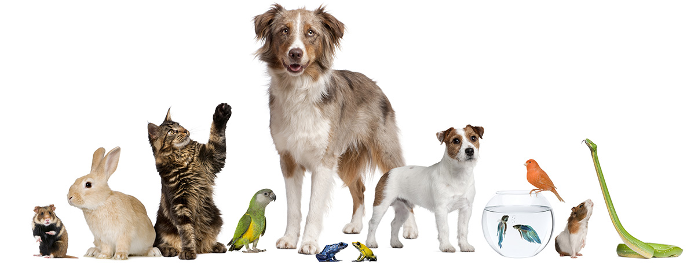
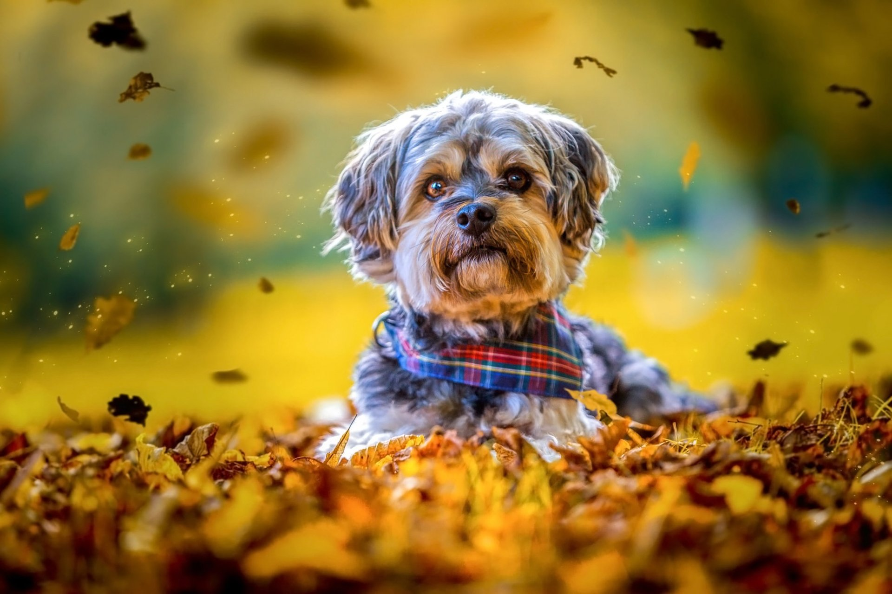
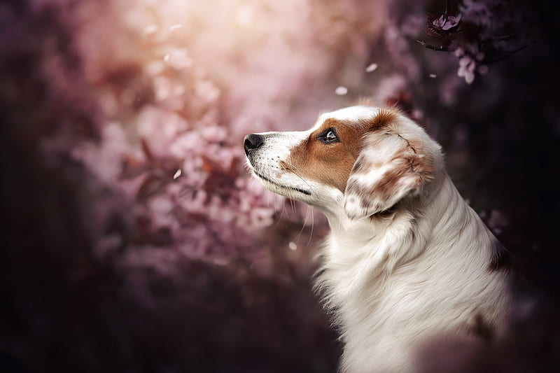
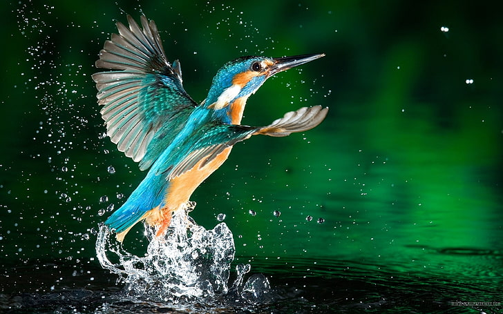
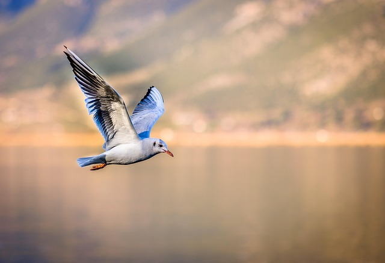

Any Animal Kept By Human Beings As A Source Of Companionship And Pleasure.

The history of pets is intertwined with the process of animal domestication,
and it is likely that the dog, as the first domesticated species, was also the first pet.
Perhaps the initial steps toward domestication were taken largely through the widespread human practice of making pets of captured young wild animals.
Eventually, a working relationship developed between the dogs and their human captors.
The dog was swifter, had stronger jaws, and was better at tracking prey; therefore,
it could be of great use in hunting and guarding duties. From human beings, on the other hand,
the dogs were assured of a constant supply of food as well as warmth from the fire.
There is indirect evidence that the dog may have been domesticated and kept as a pet since Paleolithic times,
as can be surmised from the paintings and carvings that archaeologists have found in ancient campsites and tombs.
In Mesopotamia, dogs that look remarkably like the present-day mastiff were shown participating in a lion hunt.
Domestic pets were often depicted in the scenes of family life in ancient Egypt; hunting dogs of the greyhound or
saluki type accompany their master to the chase, and lap dogs frequently sit under the chair of their master or mistress.
ORIGIN AND HISTORY OFF DOGS

Ancestry
Paleontologists and archaeologists have determined that about 60 million years ago a small mammal, rather like a weasel,
lived in the environs of what are now parts of Asia. It is called Miacis, the genus that became the ancestor of the animals known today as
canids: dogs, jackals, wolves, and foxes. Miacis did not leave direct descendants, but doglike canids evolved from it.
By about 30 to 40 million years ago Miacis had evolved into the first true dog—namely, Cynodictis. This was a medium-size animal,
longer than it was tall, with a long tail and a fairly brushy coat. Over the millennia Cynodictis gave rise to two branches,
one in Africa and the other in Eurasia. The Eurasian branch was called Tomarctus and is the progenitor of wolves, dogs, and foxes.

Genetic evidence suggests that dogs descended directly from wolves (Canis) and that the now-extinct wolf
lineages that produced dogs branched off from the line that produced modern living wolves sometime between
27,000 and 40,000 years ago. The timing and location of dog domestication is a matter of debate.
There is strong genetic evidence, however, that the first domestication events occurred somewhere
in northern Eurasia between 14,000 and 29,000 years ago. In this region wolves likely facilitated
their own domestication by trailing nomadic people in northern Eurasia and consuming the remains of game animals that hunters left behind.
FLOWCHART
ORIGIN AND HISTORY OF BIRDS

Birds are a group of warm-blooded vertebrates constituting the class Aves (Latin: [ˈaːwεs]), characterised by
feathers, toothless beaked jaws, the laying of hard-shelled eggs, a high metabolic rate, a four-chambered heart,
and a strong yet lightweight skeleton. Birds live worldwide and range in size from the 5.5 cm (2.2 in) bee hummingbird
to the 2.8 m (9 ft 2 in) common ostrich. There are over 11,000 living species and they are split into 44 orders.
More than half are passerine or "perching" birds. Birds have wings whose development varies according to species;
the only known groups without wings are the extinct moa and elephant birds. Wings, which are modified forelimbs,
gave birds the ability to fly, although further evolution has led to the loss of flight in some birds, including
ratites, penguins, and diverse endemic island species. The digestive and respiratory systems of birds are also uniquely
adapted for flight. Some bird species of aquatic environments, particularly seabirds and some waterbirds, have further
evolved for swimming. The study of birds is called ornithology.

Feathers require maintenance and birds preen or groom them daily,
spending an average of around 9% of their daily time on this.[139] The bill is used to brush
away foreign particles and to apply waxy secretions from the uropygial gland; these secretions
protect the feathers' flexibility and act as an antimi crobial agent, inhibiting the growth of
feather-degrading bacteria.[140] This may be supplemented with the secretions of formic acid
fromants, which birds receive through a behaviour known as anting, to remove feather parasites.